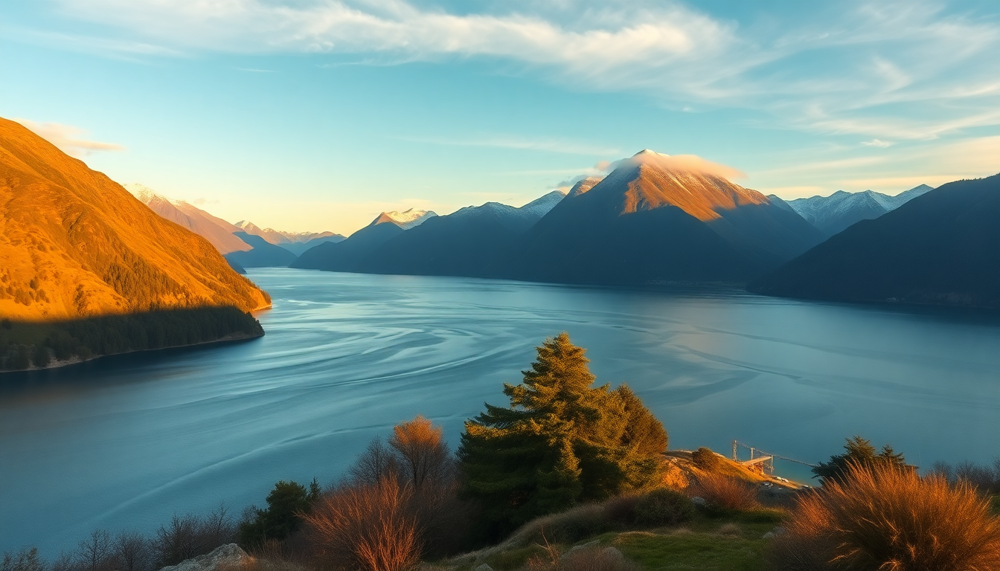

7-Day New Zealand Itinerary: Queenstown, Milford Sound & Wanaka

I spent a week driving the loop from Queenstown through Te Anau, Milford Sound, and Wanaka, and came away with a clear picture of what works and what doesn’t. This itinerary is built for someone who wants to see the big sights without rushing, eat well, and avoid the worst crowds. Here’s exactly how I’d do it again.
Is 7 days enough for Queenstown, Milford Sound, and Wanaka?
Yes, but only if you keep the driving tight and don’t try to add glaciers or the West Coast. Seven days gives you two full days in Queenstown, a day for Milford Sound (via Te Anau), a full day in Wanaka, and a buffer day for weather. I stayed four nights in Queenstown, one in Te Anau, and two in Wanaka, which felt right.
The key is booking your Milford Sound cruise early (the 8:45 AM departure from the dock fills up fast) and leaving Queenstown by 7 AM to avoid the bus caravan on the Milford Road.
What should I do on Day 1 and Day 2 in Queenstown?
Land in Queenstown, pick up your rental car from the airport lot, and head straight to Fergburger for lunch — yes, it’s touristy, but the Bullseye burger with beetroot and a fried egg is genuinely good. Skip the queue by ordering takeaway on their website and eating on the lawn by the lake.
Afternoon: walk the Queenstown Gardens trail (30 minutes, flat, great lake views) and book a Shotover Jet ride for the next morning. The jet boat through the canyon is loud, wet, and the only adrenaline activity I’d actually pay for again.
Evening dinner at Rata (owned by Michelin-starred chef Josh Emmett) — the lamb shoulder for two is the move. Reserve a week ahead.
Day 2: morning Shotover Jet (the 9 AM slot), then drive 40 minutes to Glenorchy. Stop at the Glenorchy Lagoon Boardwalk — it’s a 45-minute loop through wetlands with reflections of the mountains. Skip the Paradise road unless you have a 4WD; the gravel eats rental car tires.
Is Milford Sound worth the drive from Queenstown?
Yes, but the drive itself is the real attraction. From Queenstown it’s 4 hours one way, so I broke it by staying overnight in Te Anau. The town itself is just a service hub, but Te Anau Lodge (a converted 1930s mansion) was the quietest night of my trip.
The next morning, drive the Milford Road (SH 94) at first light. Stop at Mirror Lakes (5 minutes, literally a pull-off) and The Chasm (a 20-minute walk to a waterfall canyon). The Homer Tunnel opens at 6 AM, but we hit it at 7:30 and waited only 10 minutes.
On the Milford Sound cruise, I booked with Southern Discoveries — smaller boat, fewer people, and they let you stand on the bow for the full 2 hours. We saw fur seals, dolphins, and a single penguin. The waterfall Stirling Falls comes close enough to soak your jacket.
Where should I eat and stay in Te Anau?
Te Anau is a one-night town, but the food punched above its weight. The Fat Duck serves a venison pie that’s better than any pub food I had in Queenstown. Redcliff Cafe does a solid lamb shank and has a fireplace for the cold evenings.
For lodging, Te Anau Lodge (the mansion) or Distinction Luxmore Hotel if you want lakefront views. Skip the backpacker hostels — the road noise from the Milford traffic starts at 5 AM.
What makes Wanaka different from Queenstown?
Wanaka is Queenstown’s calmer, more affordable sibling. The lake is quieter, the crowds are thinner, and the Roys Peak Track (the Instagram-famous ridge hike) is free — just arrive by 6 AM to get a parking spot. The hike is 5-6 hours round trip, steep from the start, and the payoff is a view of the lake that looks fake.
If you don’t want to hike, drive 15 minutes to Rippon Vineyard — they do a $15 tasting flight overlooking the lake, and the pinot noir is the best I had in Central Otago. Lunch at Federal Diner (their fried chicken sandwich is worth the hype) or Big Fig for a quick flat white and a savory muffin.
For dinner, Kika is a small tapas spot that requires a reservation two weeks out. We walked in at 5 PM and got the last table — the lamb belly with kumara puree was the best dish of the trip.
Should I do a scenic flight or a lake cruise in Wanaka?
If you have the budget, do the Wanaka Helicopter 30-minute flight over the Southern Alps. It lands on a glacier (Rob Roy or the Brewster Glacier depending on conditions) and you get 10 minutes to stand on the ice. It’s $350 per person, but it’s the only way to see the alpine terrain without a multi-day hike.
Skip the lake cruises unless you’re after a sunset wine cruise — the lake is beautiful, but the views from shore are just as good. The Wanaka Lakefront Walk from the town center to the Wanaka Tree (the famous lonely willow) takes 15 minutes and costs nothing.
What’s the best way to handle the drive back to Queenstown?
The drive from Wanaka to Queenstown is 1 hour 15 minutes via the Crown Range Road (SH 89) — it’s twisty, narrow, and has a 10% gradient in places, but it saves 30 minutes compared to the longer route through Cromwell. I drove it in a 2WD hatchback with no issues, just take the corners slow.
Stop at Cardrona Hotel for a photo (it’s the oldest pub in the region, painted yellow) and grab a coffee at their garden. The Bendigo Goldfields detour adds 40 minutes but gives you abandoned mining ruins and a view of Lake Dunstan.
FAQ
What’s the best time of year for this itinerary? Late October to early April. February and March have the most stable weather for Milford Sound and clear skies for Roys Peak. December and January are peak crowds — book everything three months out. June to August is ski season, but Milford Road can close for snow.
Do I need a 4WD for this trip? No. A standard 2WD car works for all roads in this itinerary, including the Crown Range and the Milford Road. Just avoid gravel side roads like Paradise or the Routeburn Track car park after rain. Rent from Apex Car Rentals in Queenstown — they’re local and don’t charge extra for one-way drops.
How do I avoid the crowds at Milford Sound? Stay overnight in Te Anau, book the 8:45 AM cruise, and drive the Milford Road by 7 AM. The tour buses from Queenstown arrive between 11 AM and 1 PM — you’ll be leaving the sound as they park. Also, book your cruise directly with the operator, not through a third-party site that lumps you with a 50-person group.
Conclusion
- Base yourself in Queenstown for 4 nights, but don’t skip the quieter towns — Te Anau and Wanaka are the real gems.
- Break the Milford Sound drive with an overnight in Te Anau; the early cruise slot is the only way to beat the crowds.
- Hike Roys Peak at dawn, eat at Kika in Wanaka, and book the Shotover Jet for adrenaline — skip the bungee jumping (overpriced and short).
- Drive the Crown Range for speed, but the longer Cromwell route is safer if it’s raining or dark.
- Book everything — restaurants, cruises, helicopter flights — at least two weeks in advance for peak season.